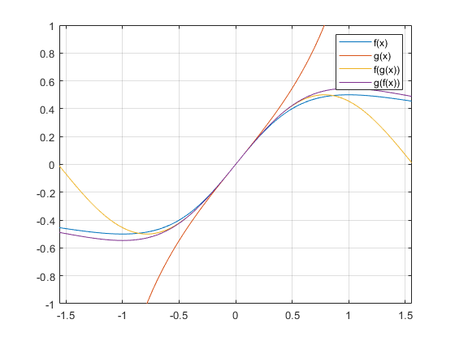

Contents
Copyright
close all; format compact; clc;
fprintf("Engineer: Rodrigo Becerril Ferreyra\n");
fprintf("Company: California State University, Long Beach\n");
fprintf("Project Name: Task 2\n");
fprintf("Start Date: 02 September 2020\n");
fprintf("End date: 08 September 2020\n");
figure();
Engineer: Rodrigo Becerril Ferreyra
Company: California State University, Long Beach
Project Name: Task 2
Start Date: 02 September 2020
End date: 08 September 2020
Task 2.1
fprintf("\nTask 2.1\n");
clear variables;
a = 5; b = 2;
res = mod(a,b);
fprintf("The remainder is %d when %d is divided by %d\n", res, a, b);
Task 2.1
The remainder is 1 when 5 is divided by 2
Task 2.2
fprintf("\nTask 2.2\n");
clear variables;
a = 5; b = 2;
res = a.^b;
fprintf("The answer is %d when %d is raised to the power of %d\n", res, a, b);
Task 2.2
The answer is 25 when 5 is raised to the power of 2
Task 2.3
fprintf("\nTask 2.3\n");
clear variables;
x = [0, 1, 2; 3, 4, 5];
y = 2.^x;
x
fprintf("y = \n\t2^x\n");
y
Task 2.3
x =
0 1 2
3 4 5
y =
2^x
y =
1 2 4
8 16 32
Task 2.4.1
fprintf("\nTask 2.4\n");
clear variables;
x = 0 : pi/10 : pi; y = x;
figure();
[X,Y] = meshgrid(x,y);
f = func1(X,Y);
contour(X,Y,f)
axis([0, pi, 0, pi])
axis equal
Task 2.4
Task 2.4.2
x = 0 : pi/10 : 2*pi; y = x;
figure();
[X,Y] = meshgrid(x,y);
f = func2(X,Y);
contour(X,Y,f)
axis([0, 2*pi, 0, 2*pi])
axis equal
Task 2.5
fprintf("\nTask 2.5\n");
clear variables;
x = 0 : pi/10 : pi;
[a, b, c] = xpowers(x);
figure(); plot(x, a, x, b, x, c);
axis([0, pi, -26/25, 26/25]);
Task 2.5

Task 2.6
fprintf("\nTask 2.5\n");
clear variables;
x = [1.4, 4.5, 7.9];
y = [2.0, 0.5, 3.2];
fprintf("x = {"); fprintf(" %6.3f", x); fprintf("}\n");
fprintf("y = {"); fprintf(" %6.3f", y); fprintf("}\n\n");
fprintf("x + y = {"); fprintf(" %6.3f", x+y); fprintf("}\n");
fprintf("x + 2y = {"); fprintf(" %6.3f", x+2*y); fprintf("}\n");
[a, b] = multi(x, y);
fprintf("Fractional parts:\n")
fprintf("x + y = {"); fprintf(" %6.3f", a); fprintf("}\n");
fprintf("x + 2y = {"); fprintf(" %6.3f", b); fprintf("}\n");
Task 2.5
x = { 1.400 4.500 7.900}
y = { 2.000 0.500 3.200}
x + y = { 3.400 5.000 11.100}
x + 2y = { 5.400 5.500 14.300}
Fractional parts:
x + y = { 0.400 0.000 0.100}
x + 2y = { 0.400 0.500 0.300}
Task 2.7
fprintf("\nTask 2.7\n");
clear variables;
x = -2 : 0.1 : 2;
y = 9 - x.^2;
figure(); plot(x, y, 'r');
y1 = x.^3 + 3.*x;
figure(); plot(x, y1, 'g');
x = -4 : 1/4 : 6;
y2 = x.^3 + 3.*x;
figure(); plot(x, y2, 'b');
Task 2.7
Task 2.8
fprintf("\nTask 2.8\n");
clear variables;
fprintf("The polynomial x^4 + x^2 + a has two real roots for values of a < 0.\n");
figure();
hold on
x = linspace(-2, 2, 101);
y = polyval([1, 0, 1, 0, -1], x);
plot(x, y);
y = polyval([1, 0, 1, 0, -5], x);
plot(x, y);
y = polyval([1, 0, 1, 0, -10], x);
plot(x, y);
plot([-2, 2], [0, 0], 'k');
legend("a = -1", "a = -5", "a = -10");
axis ([-2, 2, -10, 5]);
grid on
hold off
Task 2.8
The polynomial x^4 + x^2 + a has two real roots for values of a < 0.
Task 2.9
fprintf("\nTask 2.9\n");
clear variables;
x = linspace(-1, 1, 101);
f = x + 3;
g = x.^2 + 1;
figure(); plot(x, f, x, g, x, f.*g, x, f./g);
legend("f(x)", "g(x)", "f(x)g(x)", "f(x)/g(x)");
Task 2.9
Task 2.10
fprintf("\nTask 2.10\n");
clear variables;
x = 4;
y = x + 2;
z = (y^2 * pi)^-1;
fprintf("x = {"); fprintf(" %6.3f", x); fprintf("}\n");
fprintf("y = {"); fprintf(" %6.3f", y); fprintf("}\n");
fprintf("z = {"); fprintf(" %6.3f", z); fprintf("}\n");
fprintf("\n");
N = 1;
total = 0;
for i = 1 : 1 : N
total = total +( (1/i) + ((i + 2) * (i + 3))^-1 );
end
fprintf("The sum is %f.\n", total);
fprintf("\n");
x = 0 : 0.1 : 1;
y = (x.*cos(x))./((x.^2 + 1) .* (x + 2));
fprintf("x = {"); fprintf(" %6.3f", x); fprintf("}\n");
fprintf("y = {"); fprintf(" %6.3f", y); fprintf("}\n");
fprintf("\n");
w = ones(1, 9);
w(1) = 1;
for j = 1 : 1 : 4
w(2*j) = 3;
w(2*j + 1) = 2*j + 1;
end
fprintf("w = {"); fprintf(" %6d", w); fprintf("}\n");
Task 2.10
x = { 4.000}
y = { 6.000}
z = { 0.009}
The sum is 1.083333.
x = { 0.000 0.100 0.200 0.300 0.400 0.500 0.600 0.700 0.800 0.900 1.000}
y = { 0.000 0.047 0.086 0.114 0.132 0.140 0.140 0.133 0.121 0.107 0.090}
w = { 1 3 3 3 5 3 7 3 9}
Task 2.11
fprintf("\nTask 2.11\n");
clear variables;
speed = 100/10;
speed_mph = speed * 3.6/1.609334;
speed_kph = mi_to_km(speed_mph);
fprintf("Speed in m/s : %f\n", speed);
fprintf("Speed in mi/h: %f\n", speed_mph);
fprintf("Speed in km/h: %f\n", speed_kph);
Task 2.11
Speed in m/s : 10.000000
Speed in mi/h: 22.369502
Speed in km/h: 36.000224
Task 2.12
fprintf("\nTask 2.12\n");
clear variables;
x = -pi/2 + 0.01 : 0.01 : pi/2 - 0.01;
f = x./(1 + x.^2); g = tan(x);
fog = g./(1 + g.^2); gof = tan(f);
figure(); plot(x, f, x, g, x, fog, x, gof);
axis([-pi/2 + 0.01, pi/2 - 0.01, -1, 1]);
grid on; legend("f(x)", "g(x)", "f(g(x))", "g(f(x))");
Task 2.12

Task 2.13
fprintf("\nTask 2.13\n");
clear variables;
fprintf("Please input constants a, b, and c for the function ax^2 + bx + c.\n");
a = 5; b = 2; c = 1;
fprintf("The equation that you inputted is %fx^2 + %fx + %f.\n", a, b, c);
y = 0 : pi/100 : pi;
x = sin(y);
q = polyval([a, b, c], x);
figure(); plot(x, q);
grid on;
Task 2.13
Please input constants a, b, and c for the function ax^2 + bx + c.
The equation that you inputted is 5.000000x^2 + 2.000000x + 1.000000.